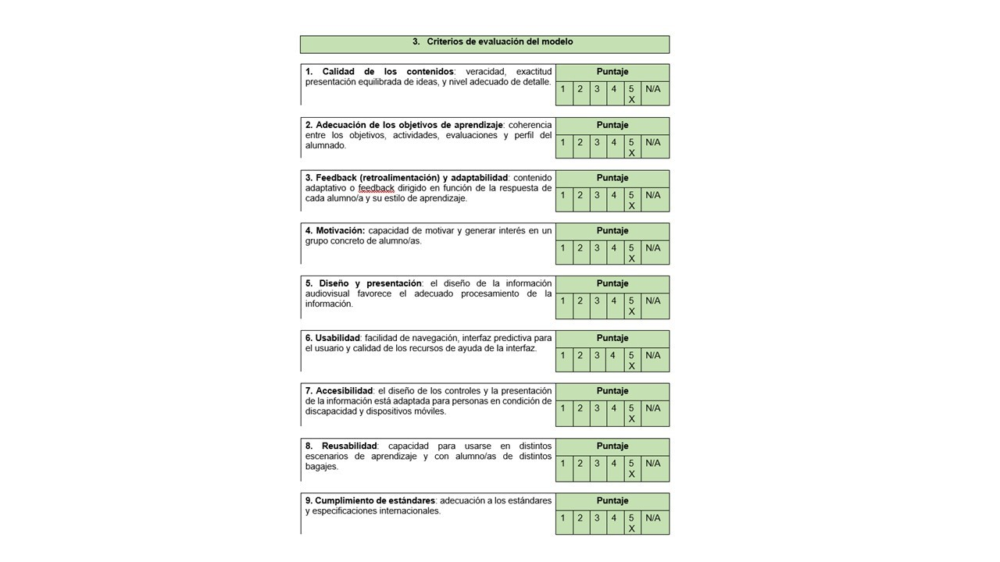
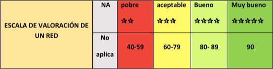
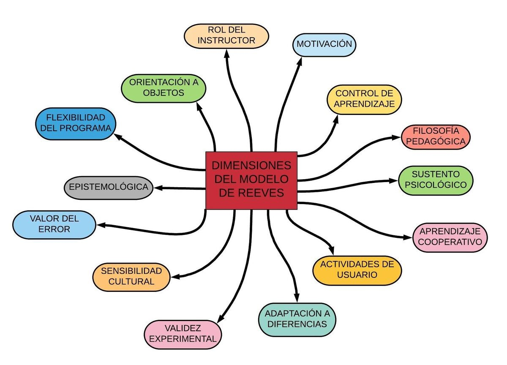
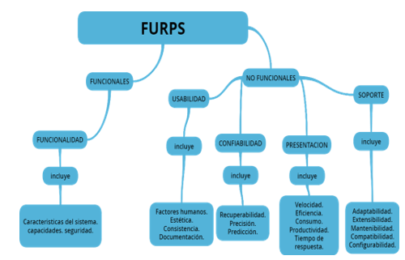
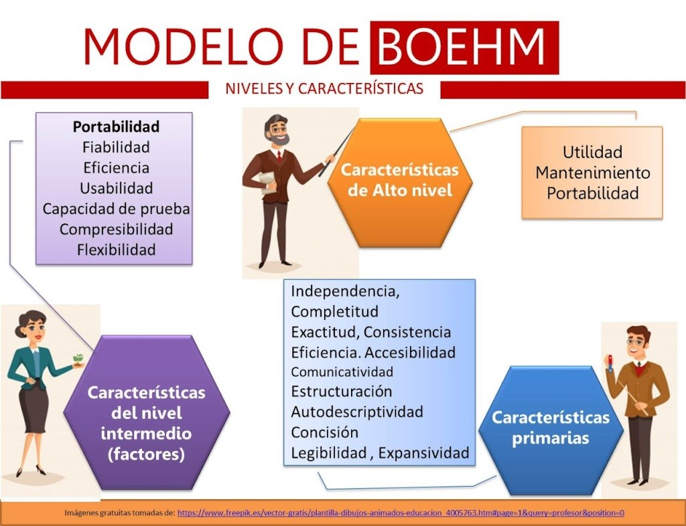

Modelos de evaluación de RED
-
COdA – Calidad de Objetivos de Aprendizaje
-
Descripción: Consiste en un formulario con 10
criterios de calidad, cada uno se califica de 1 a 5. Incluye una
guía con buenas prácticas para ayudar a evaluar los Objetivos de
Aprendizaje (OA).
-
Criterios de Evaluación: Se evalúan aspectos
como coherencia, calidad de contenidos, reflexión, innovación,
interactividad, motivación, diseño, usabilidad, accesibilidad,
reutilización e interoperabilidad.
-
Métrica o Escala de Evaluación: Cada criterio
se califica del 1 (mínimo) al 5 (máximo). Si el criterio no
aplica o el evaluador no puede juzgarlo, se usa la opción “No
Aplicable” (NA).
-
Metodología: Se puede usar evaluación
individual, autoevaluación, trabajo en grupo o evaluación entre
pares.
-
Instrumento de Evaluación: Es una planilla o un
formato que se utiliza para registrar la evaluación de calidad.

-
LORI-AD Learning Object Review Instrument
-
Descripción:
Herramienta diseñada para evaluar objetos de aprendizaje
multimedia, considerando calidad de contenidos, objetivos,
retroalimentación, adaptabilidad, motivación, diseño,
usabilidad, accesibilidad, reusabilidad y cumplimiento de
estándares.
-
Criterios de Evaluación:
Incluye aspectos como contenido, objetivos, feedback,
adaptabilidad, motivación, diseño, usabilidad, accesibilidad,
reusabilidad y estándares.
-
Métrica o Escala de Evaluación:
Escala de 1 a 5 para cada criterio, con opción "No aplicable" si
el criterio no corresponde o el evaluador no está calificado.
-
Metodología:
Evaluación subjetiva mediante escala de 5 estrellas, permitiendo
valorar la calidad e idoneidad del recurso educativo.
-
Instrumento de Evaluación: Planilla
estructurada para revisión de calidad.

-
REEVES
-
Descripción:
Reeves propone un modelo para la evaluación de Educación Basada
en Computadores. Consta de 10 dimensiones pedagógicas basadas en
teorías y conceptos de aprendizaje.
-
Criterios de Evaluación:
Tiene como base diez dimensiones: 1. Control del alumno, 2.
Actividad del alumno, 3. Aprendizaje cooperativo/colaborativo,
4. Orientación objetivos, 5. Aplicabilidad, 6. Valor añadido, 7.
Motivación, 8. Valoración del conocimiento previo, 9.
Flexibilidad y 10. Feedback.
-
Métrica o Escala de Evaluación:
Estas dimensiones han sido usadas para evaluar cursos en
ambientes de e-learning y, si se considera a un curso como un
Objetivo de Aprendizaje con alto nivel de agregación, este
modelo puede usarse para evaluar la calidad desde el punto de
vista pedagógico.
-
Metodología:
Evaluación cualitativa y/o cuantitativa, que puede incluir.
Análisis documental (planes de clase, programas), observación
directa del uso de tecnología, entrevista a docentes y
estudiantes, cuestionarios.
Se interpreta cada dimensión según la experiencia de uso y el
impacto educativo de la tecnología.
-
Instrumento de Evaluación:
Un instrumento común es una
rúbrica o matriz de evaluación con los 8
criterios, donde se describen los niveles de desempeño en cada
uno. También puede aplicarse
cuestionario estructurado
basado en las dimensiones del modelo.

-
FURPS – Functional, Usabiliy, Reliability,
Performance, Supportability.
-
Descripción:
Modelo desarrollado por Hewlett-Packard para evaluar la calidad
de sistemas de software, incluyendo objetos de aprendizaje o
entornos digitales. Clasifica los atributos en funcionales y no
funcionales.
-
Criterios de Evaluación:
Evalúa aspectos como funciones del programa, capacidad,
seguridad, facilidad de uso (estética, documentación, factores
humanos), confiabilidad del sistema, velocidad y uso de
recursos, y soporte antes y después de la implementación.
-
Métrica o Escala de Evaluación:
Se pueden usar escalas cualitativas (bajo, medio, alto) o
cuantitativa (1 a 5, 1 a 10) para medir el grado de cumplimiento
de cada característica
-
Metodología:
Evaluación de productos a través de la asignación y análisis de
atributos de calidad, encuestas y revisión técnica del software
o recurso educativo.
-
Instrumento de Evaluación:
Planilla o formato estructurado de evaluación de la calidad.

-
GALVIS
-
Descripción:
Este modelo es una propuesta integral para evaluar la calidad
pedagógica, funcionalidad técnica y usabilidad de los Recursos
Educativos Digitales (RED). Su aplicación permite garantizar que
los objetos de aprendizaje sean efectivos y adecuados para la
enseñanza.
-
Criterios de Evaluación:
Los criterios utilizados como indicadores de calidad y
efectividad son los siguientes:
-
Calidad pedagógica:
Claridad de objetivos, coherencia metodológica y promoción
del aprendizaje autónomo.
-
Funcionalidad técnica:
compatibilidad con diferentes dispositivos, estabilidad y
optimización del rendimiento.
-
Usabilidad y diseño: Facilidad de
navegación, interactividad y accesibilidad.
-
Métrica o Escala de Evaluación:
El modelo emplea una rúbrica con escala de 1 (deficiente) a 5
(excelente) para cada criterio, permitiendo obtener un
diagnóstico detallado del RED.
-
Metodología:
Identificación del recurso educativo y su contexto de
aplicación, revisión preliminar del contenido, diseño y
funcionalidades técnicas, aplicación del instrumento de
evaluación basado en los criterios definidos, valoración de los
resultados y generación de una puntuación final, elaboración de
un informe con fortalezas, debilidades y recomendaciones de
mejora.
-
Instrumento de Evaluación:
El modelo utiliza una rúbrica estructurada para evaluar cada
criterio con puntuaciones específicas. Además, se pueden incluir
entrevistas y encuestas a docentes y estudiantes para obtener
datos cualitativos adicionales.

-
Boehm
-
Descripción:
Es un modelo incremental, debido en regiones de tareas y esta a
su vez en conjuntos de tareas, las cuales se ajustan a la
cantidad de iteraciones que el equipo defina, y cada iteración
se divide en cuatro sectores: planeación, análisis de riesgo,
ingeniería y evaluación.
-
Criterios de Evaluación: Se valoran
características de tres niveles:
-
Alto nivel: utilidad, mantenimiento,
portabilidad.
-
Intermedio:
eficiencia, fiabilidad, usabilidad, flexibilidad,
comprensibilidad, entre otros.
-
Primitivas:
exactitud, consistencia, accesibilidad, estructuración,
legibilidad, etc.
-
Métrica o Escala de Evaluación:
Evalúa la calidad del sistema mediante características como
consistencia, integridad y transporte de datos, considerando un
lenguaje de programación adecuado.
-
Metodología:
Busca que el software cumpla lo que necesita el usuario, sea
eficiente, fácil de usar y bien desarrollado.
-
Instrumento de Evaluación:
Planilla de evaluación de la calidad.

← Volver al inicio